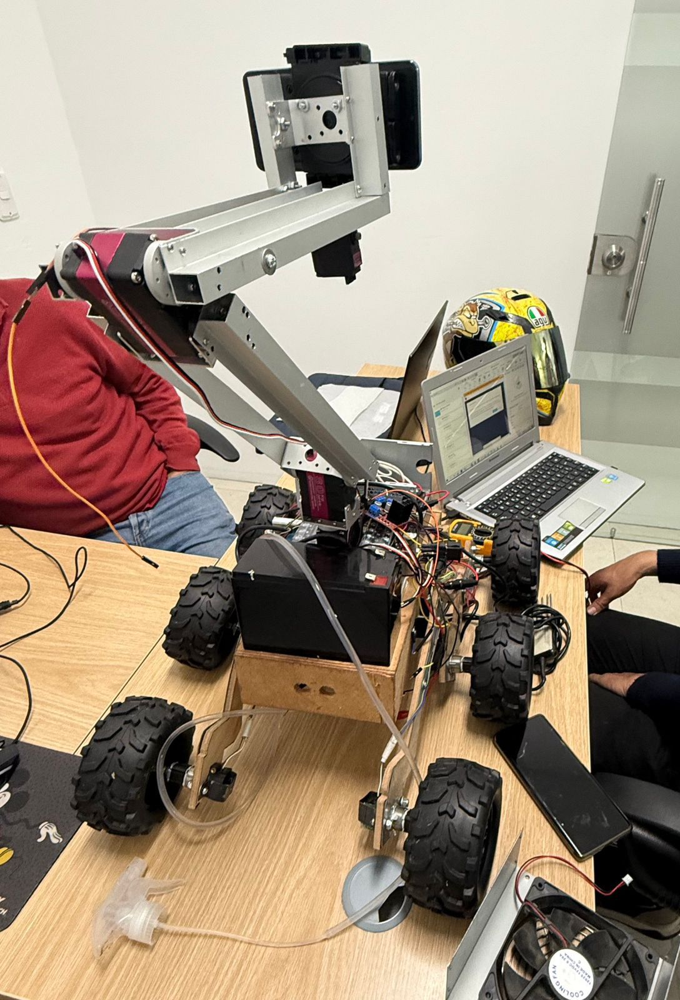
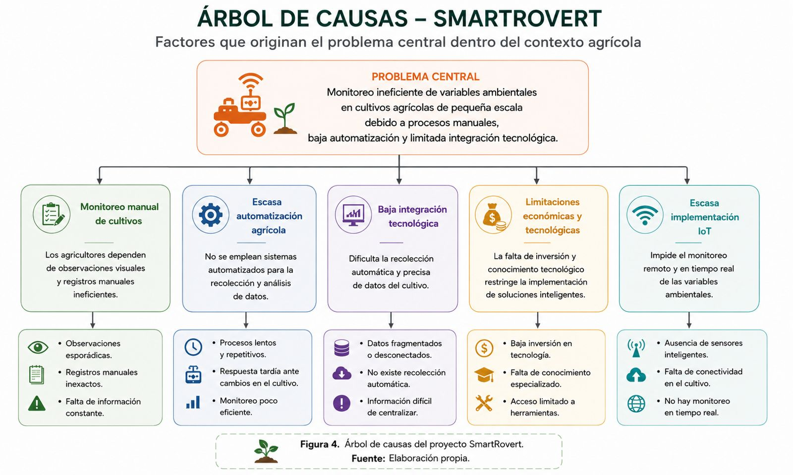
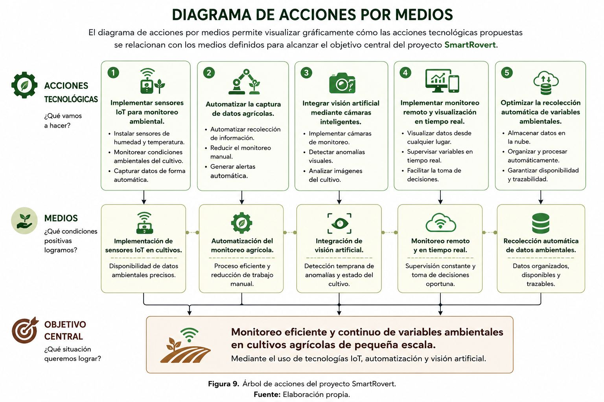
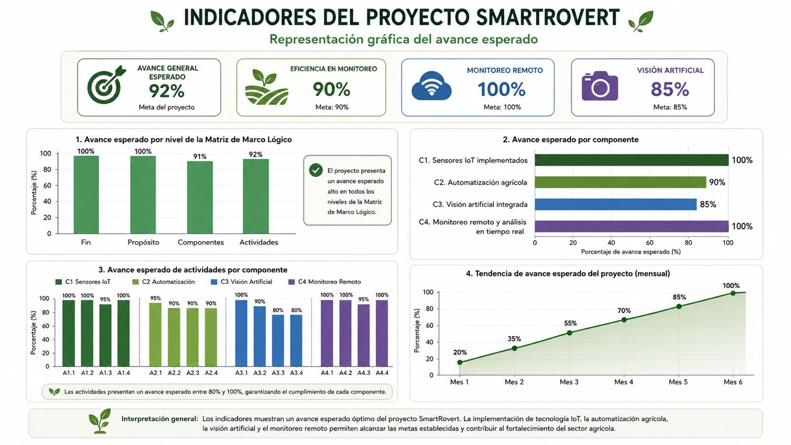
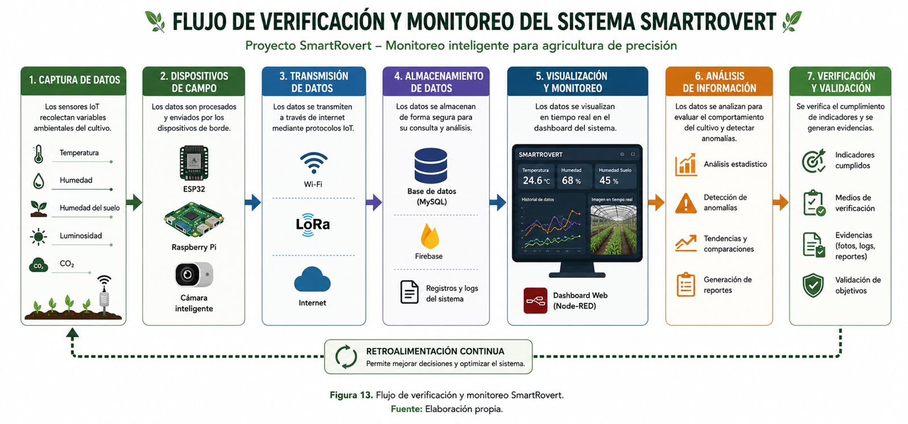
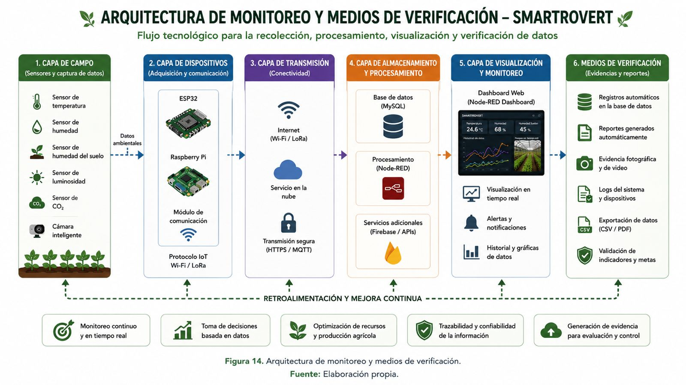
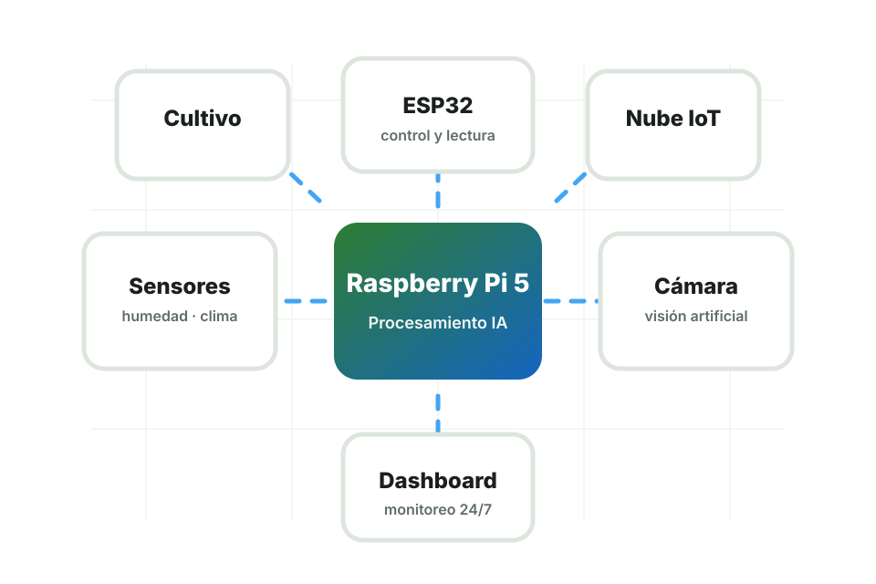
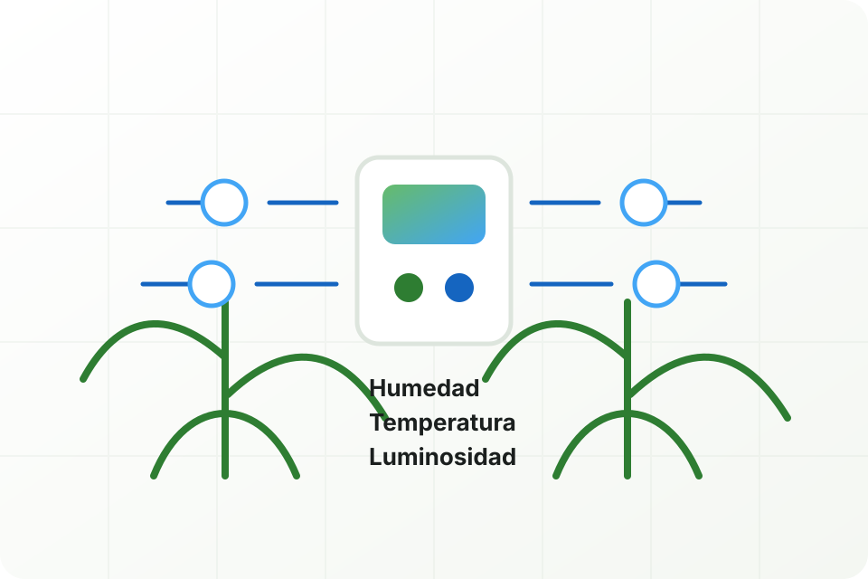
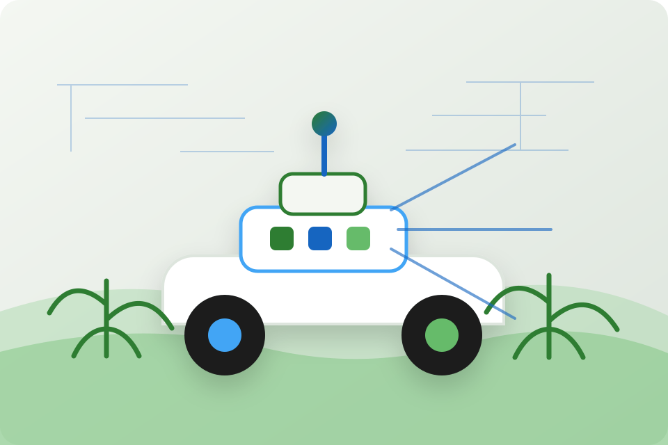
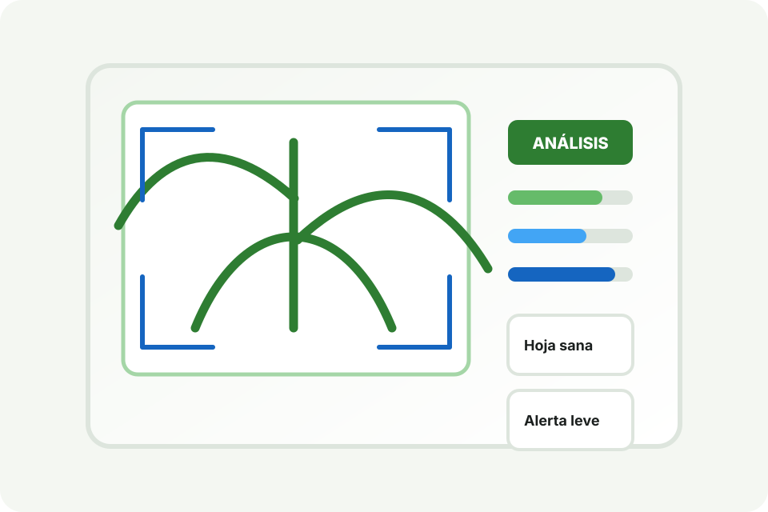

anteproyecto smartagriculture
Anteproyecto PDF deduplicado. Tamaño: 1.5 MB.
Centro de consulta para PDFs, documentos editables, diagramas, imágenes del prototipo, recursos gráficos e inventario de auditoría de la fusión.
Todos los PDFs, DOCX y documentos útiles quedaron organizados en assets/docs, con rutas relativas compatibles con GitHub Pages.
Anteproyecto PDF deduplicado. Tamaño: 1.5 MB.
Versión editable del anteproyecto. Tamaño: 1.0 MB.
Documento académico principal. Tamaño: 1.2 MB.
Documento académico principal. Tamaño: 1.1 MB.
Matriz escaneada preservada. Tamaño: 210 KB.
Matriz escaneada preservada. Tamaño: 499 KB.
Matriz de marco lógico. Tamaño: 1008 KB.
Versión editable de la matriz. Tamaño: 4.9 MB.
Archivo temporal de Word conservado para auditoría. Tamaño: 162 B.
Todas las imágenes del proyecto secundario y los visuales modernos del frontend principal quedaron dentro de la plataforma final.

Foto/arte del robot. Tamaño: 204 KB.

Foto del prototipo. Tamaño: 222 KB.

Foto de pruebas. Tamaño: 262 KB.

Foto de sensores. Tamaño: 148 KB.

Marco lógico. Tamaño: 210 KB.

Marco lógico. Tamaño: 199 KB.

Marco lógico. Tamaño: 184 KB.

Marco lógico. Tamaño: 183 KB.

Marco lógico. Tamaño: 205 KB.

Marco lógico. Tamaño: 187 KB.

Marco lógico. Tamaño: 191 KB.

Marco lógico. Tamaño: 199 KB.

Marco lógico. Tamaño: 227 KB.

Marco lógico. Tamaño: 196 KB.

Marco lógico. Tamaño: 184 KB.

Marco lógico. Tamaño: 168 KB.

Marco lógico. Tamaño: 190 KB.

Marco lógico. Tamaño: 268 KB.

Recurso gráfico heredado. Tamaño: 13 KB.

Recurso gráfico secundario conservado. Tamaño: 36 KB.

Recurso gráfico secundario conservado. Tamaño: 17 KB.

Recurso gráfico secundario conservado. Tamaño: 27 KB.

Recurso gráfico secundario conservado. Tamaño: 25 KB.

Recurso gráfico secundario conservado. Tamaño: 19 KB.

Recurso gráfico secundario conservado. Tamaño: 24 KB.

Diagrama moderno original. Tamaño: 2 KB.

Ilustración moderna original. Tamaño: 2 KB.

Ilustración moderna original. Tamaño: 3 KB.

Ilustración moderna original. Tamaño: 2 KB.
Se detectó una referencia antigua a assets/documentos/pechakucha.pdf, pero ese archivo no existe en el proyecto secundario. Para evitar rutas rotas no se publicó como enlace activo.
Las páginas secundarias anteproyecto.html, matriz-consistencia.html, operacionalizacion.html y pechakucha.html estaban vacías; el contenido recuperable se integró desde PDFs, DOCX, imágenes y marco-logico.html.
{kind=link}
{kind=link}
{kind=link}
{kind=link}
{kind=link}
{kind=link}
{kind=link}
{kind=link}
{kind=link}
{kind=link}